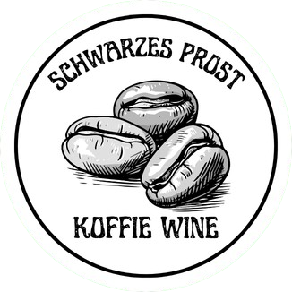
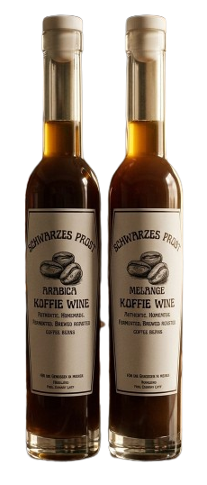
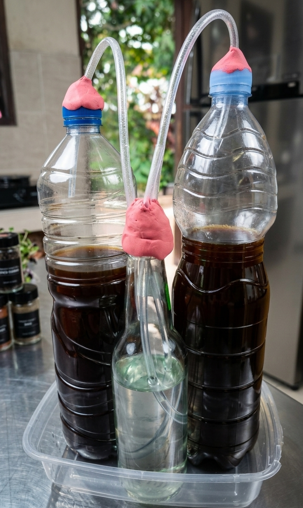

Schwarzes Prost
Membuat Coffee Wine dengan
bahan dasar kopi
Arabika dan Melange
Pada proyek ini, saya membuat coffee wine. Coffee wine merupakan produk fermentasi alkohol yang berbeda dari wine pada umumnya. Perbedaan utama ada pada penggunaan kopi sebagai bahan baku utamanya, bukan buah buahan. Perbedaan bahan baku ini menyebabkan perbedaan pada karakteristik kimia dan sensori coffee wine seperti pH, aroma, rasa yang khas. saya mengamati dampak dari jenis kopi sebagai bahan dasar terhadap pH, Aroma, dan Rasa coffee wine berdasarkan tes empirik dan tes organoleptik oleh 10 responden.

